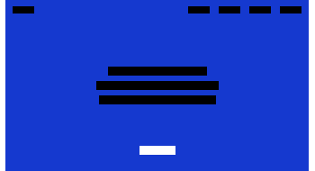
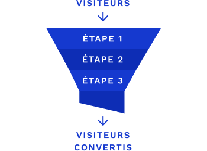

Acte de
conversion
& top task
L’acte de conversion est l’objectif principal de la page souhaité par la propriétaire du site
Une top task est quant à elle la fonctionnalité qui intéresse l’utilisateur lors de sa visite sur lapage.
En général, l’acte de conversion est mis en en avant par rapport au reste du contenu.
Taux de
conversion
Ce taux est un rapport entre le nombre de visiteur et le nombre de personne qui vont réaliser l’acte de conversion.
Lors de l’analyse de ces taux, il est important de bien recontextualiser le site. Le taux peut indiquer différentes choses en fonction de l’objectif du site, un taux semblant faible aux premiers abords peut-être bon pour certaines pages comme mauvais pour d’autres.
Tunnel de
conversion
Il s’agit du processus partant de l’arrivé du visiteur sur le site jusqu’à la réalisation de l’acte de conversion.
Un tunnel efficace est réalisé de sorte à limiter le nombre d’utilisateur perdu à chaque étape.
Taux de rebond
Ce taux est le nombre d’utilisateurs arrivé sur le site et est partis aussitôt sans visiter d’autres pages. Le visiteur à rebondi lorsque :
- il a cliqué sur un lien externe;
- il a fermé l'onglet ou la fenêtre;
- il a tapé une nouvelle URL;
- il a cliqué sur 'Précédent'.
Le taux de rebond dépend de type de page, comme pour le taux de conversion, avoir eu beaucoup d’utilisateurs qui ont rebondis peut être une bonne chose comme une mauvaise.
Page load
Il s’agit du temps de chargement du site, souvent négliger, mais quelques secondes peuvent avoir un impact énorme nottament sur la manière dont l’utilisateur va aborde la page par le suite.
Pour de gros sites telle que Amazon, cela représente de gigantesque sommes d’argent.
Avoir un temps de chargement cours demande quelques optimisations et du temps, après quoi vous serez peut-être récompensé d’un magnifique 100 sur Google Page Insight.
A/B Testing
Le principe des ces tests sont de mettre à dispostion plusieurs versions différentes du site (deux voir plus). Permettant de voir quel version est la plus efficace. Le but étant de mettre en place une version obtennant plus de taux de conversion.
Pour ces tests soient pertinnents et intéressants, l'A/B Testing doit être effectuer sur des sites avec beaucoup de visite.
Data Driven Design
Cette méthode divsié en quatre étapes vise à la réexecution de l'étape trois et quatre. Pour avoir le site le plus efficace, il faut tester, modifier, retester et ainsi de suite jusqu'à avoir le résultat voulu.